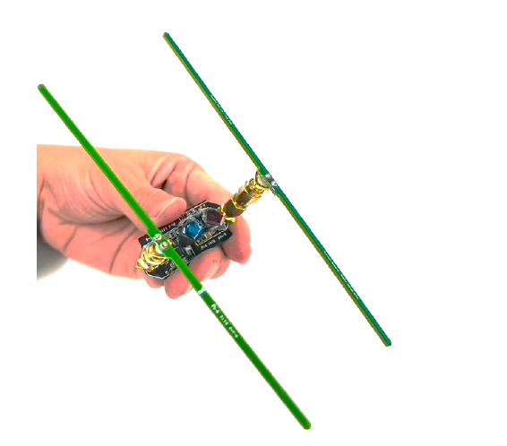

Project FastLoc: Ultra Low-Latency Backscatter for Fast-moving Location Tracking

We propose and demonstrate FastLoc, a precision tracking system that locates tiny, battery-free analog backscatter tags at sub-millisecond latency and sub-centimeter accuracy. FastLoc is a hybrid system that simultaneously uses RF and optical signals to track tiny tags that can be attached to everyday objects. FastLoc leverages the RF channel responses from tags for estimating the coarse region where the tags may be located. It simultaneously uses the sensed optical information modulated on the backscatter signals to enable fine-grained location estimation within the coarse region. To achieve this, we design and fabricate a custom analog tag that consumes less than 150 uW and instantaneously converts incident optical signals to one-shot wideband harmonic RF responses at nanosecond latency. We then develop a static high-density distributed-frequency structured light pattern that can localize tags in the area of interest at a sub-centimeter accuracy and microsecond-scale latency. A detailed experimental evaluation of FastLoc shows a median accuracy of 0.7 cm in tag localization with a 0.51 ms effective localization latency.
Citation
- Ultra Low-Latency Backscatter for Fast-moving Location Tracking, Jingxian Wang, Vaishnavi Ranganathan, Jonathan Lester and Swarun Kumar, UbiComp 2022 PAPER